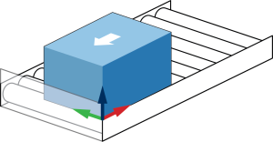
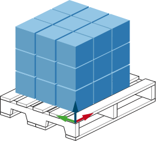
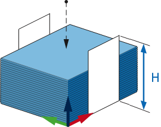
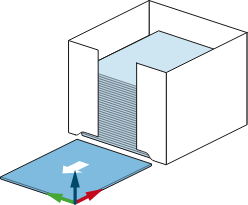

A robotic cell is composed of the robot and its work environment. For proper operation of PalletBuilder, you need to define the stations the robot will interact with and the grippers it will use.
PalletBuilder offers four different station types: Infeed, Build, Dispenser Search Stack and Dispenser Fixed Pick.
Infeed: This type of station supplies box products to be loaded on a pallet usually by way of a conveyor.
Build: This station is used to define how the pallet, separators and boxes are put together to form a build pattern.
Dispenser Search Stack: Given a stack of pallets or separators, this station can be used when a sensor is used to find the top item of the stack and pick it.
Dispenser Fixed Pick: This station is used when separators and pallets are fed to a specific location for pick up.
Stations can be created using the New Station button or stations can be modified or deleted using the Edit Station and Delete Station buttons.
Once the setup or modification of the palletizing cell is complete, the Generate Supervisor Job can be pressed to create a supervisor job that will govern the palletizing operation. The supervisor flow variable references an I-Variable that controls the palletizing state (i.e. palletize, stop after cycle complete, stopper).
If multiple build stations exist, additional options appear to specify how the palletization operation transitions between build stations. The Build Station Tracking I-Var controls which build station is active. The active build station can either change after each cycle or after the current build station is complete.
Note: Build stations will be visited in the order they were specified in the "Build Editor" screen.
The PalletBuilder database (cell setup, pick operation, layer, build...) can be exported to a USB drive using the Save Database to USB button. This allows the same setup to be restored or loaded on a different Smart Pendant (in case the pendant needs to be changed) using Load Database from USB.
Note: On Smart Pendant versions older than 2.3, a cell setup will be exported to a job. The job will then need to be transferred to a USB drive using the Smart Pendant's File Transfer utility.